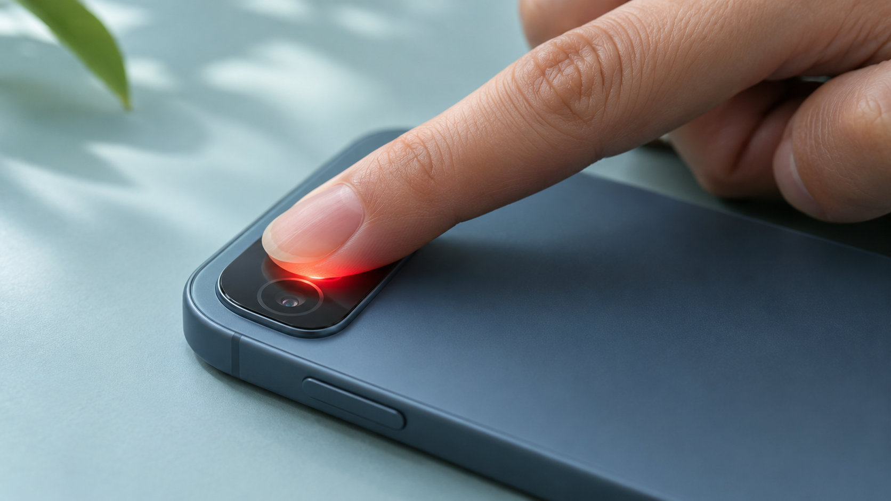

When should a phone trust its pulse reading?
Fingertip camera, compared with ECG.

Case 13502110 seconds
Fingertip PPG
ECG reference
0 s5 s10 s
One correction. One miss.
From light changes to a pulse estimate.
CaptureFingertip PPG
ScorePeaks, rhythm, slope
CheckQuality and spectral support
DecideShow bpm or request a repeat
Results on 6 held-out people.
386 fingertip recordings · paired ECG
| Outcome | Previous | Latest |
|---|---|---|
| Wrong reading shown | 28.50 | 28.24 |
| Unnecessary repeats | 5.18 | 5.18 |
| All repeats | 15.54 | 15.54 |
109 of 326 displayed readings missed the ±5 bpm tolerance.
Try the phone camera.
20 seconds. Analyzed on device.
Experimental estimate · ECG validation pending
Camera capture preview
20 sec
Start Record
How we’ll test it next.
Pair phone and ECG recordings across devices.
Measure whether a repeat improves the signal.
0:00 / 1:30